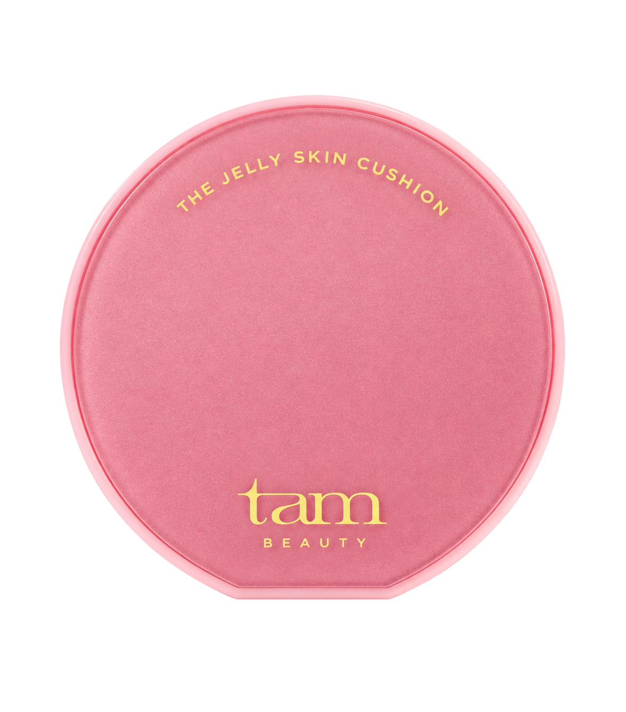
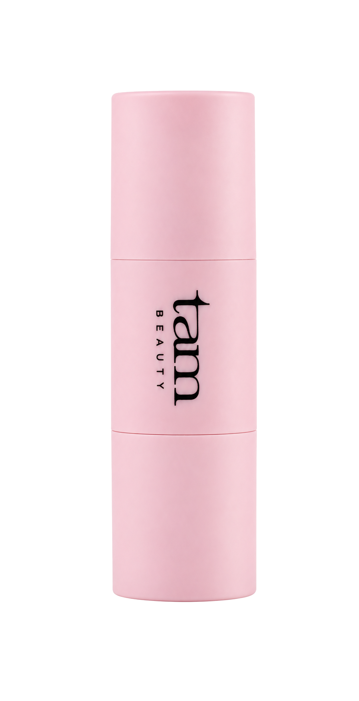
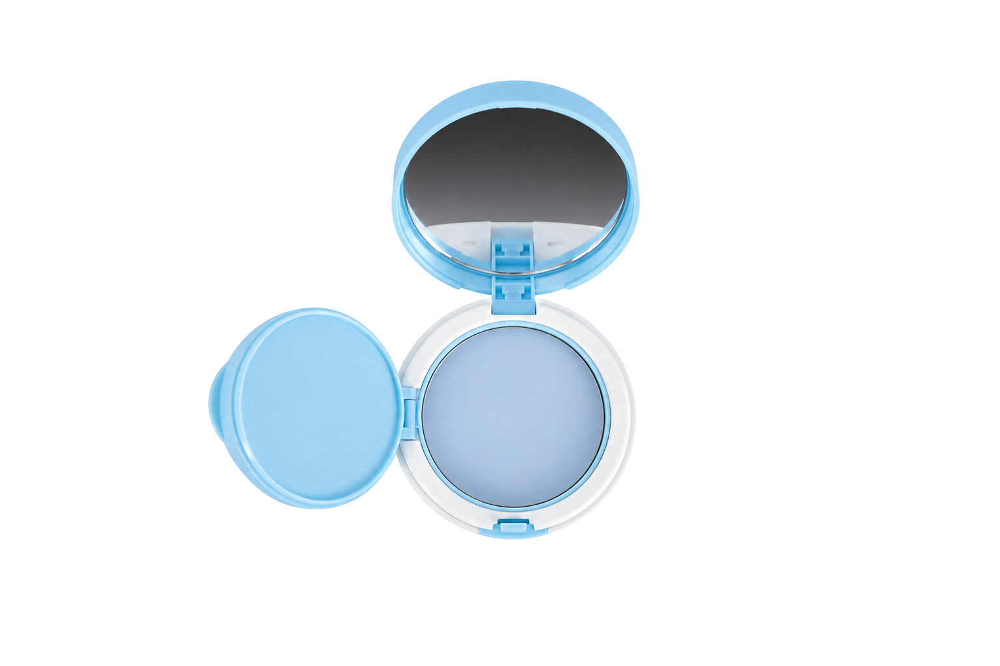
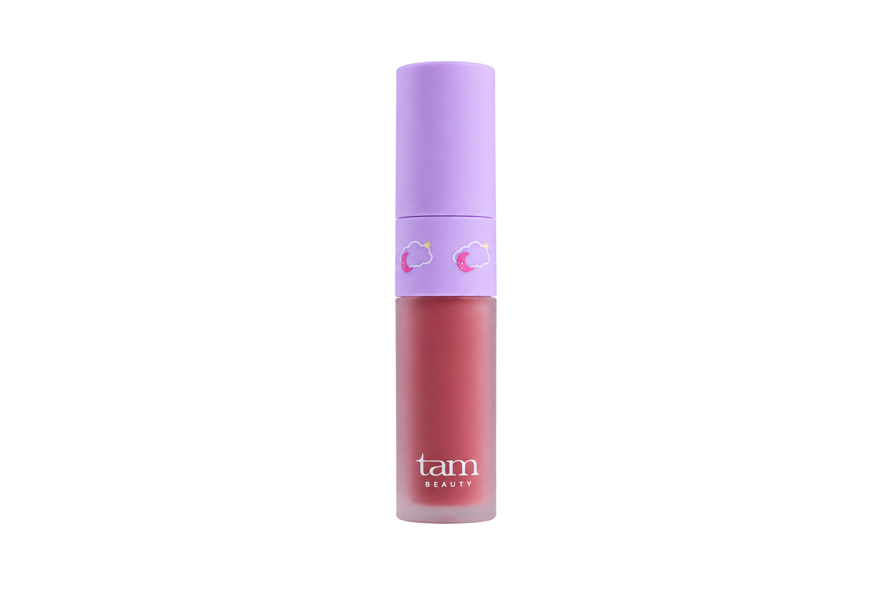
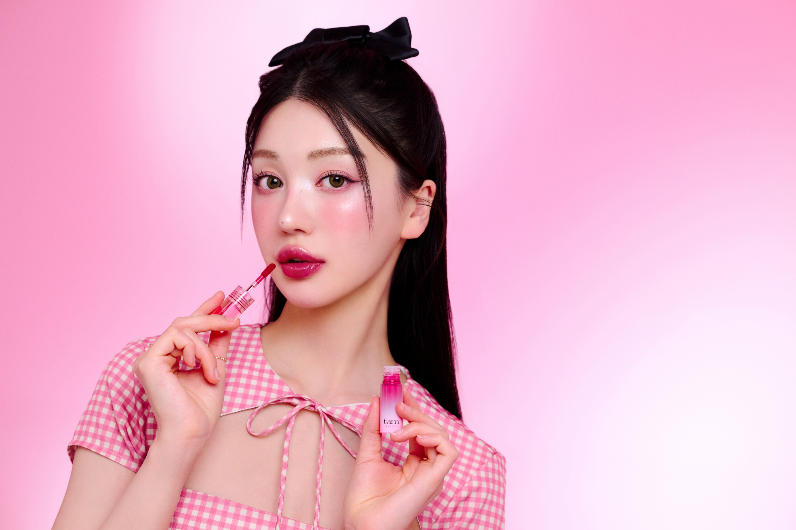
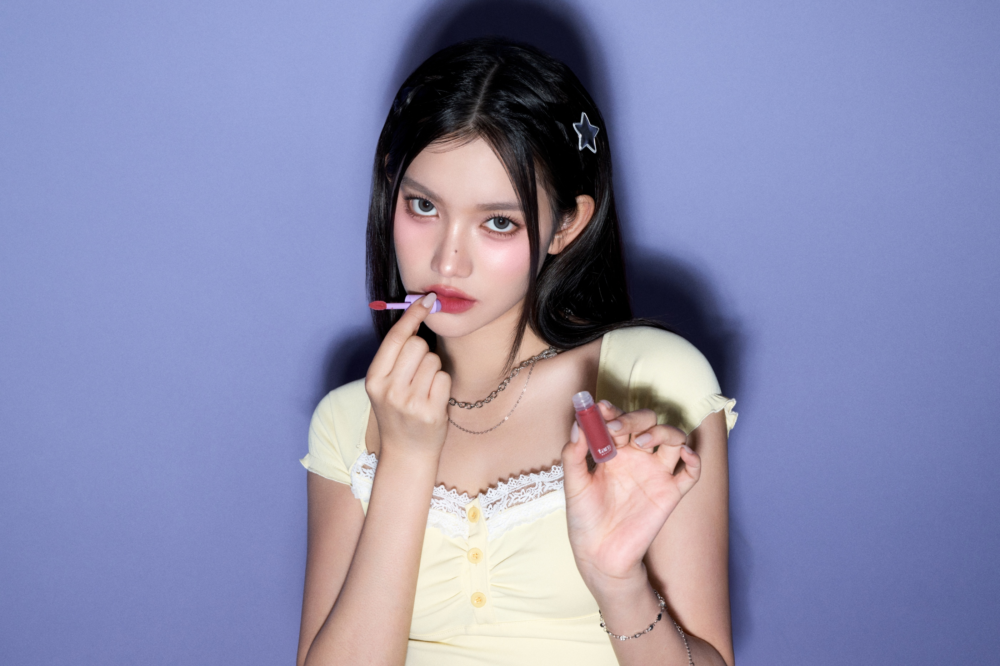
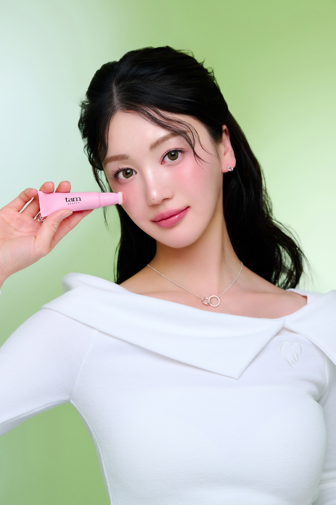
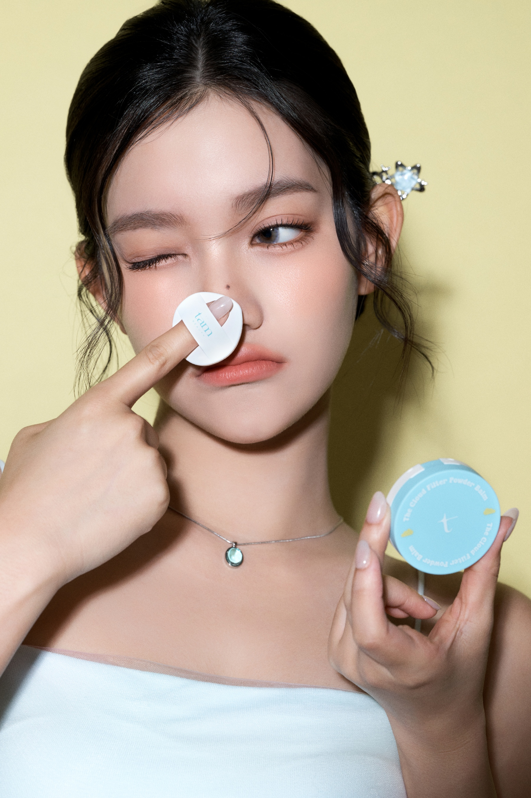
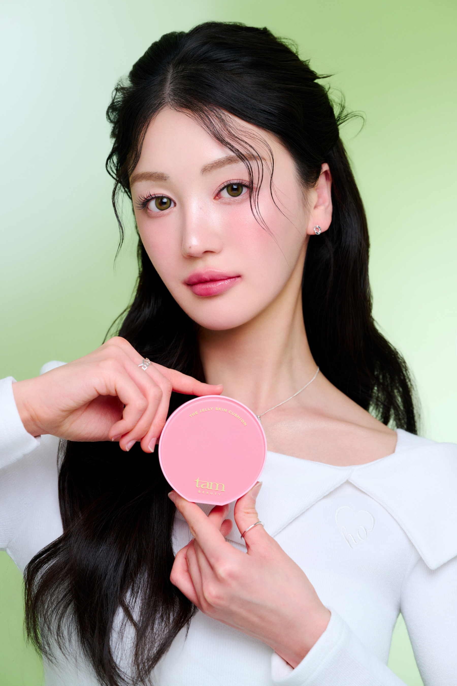

The Jelly.
글로우 베이스 & 컬러피부에는 은은한 윤기를,
입술에는 촉촉한 광택을.

Skin
Cushion.
덮지 않고 비쳐 보이는 세미 글로우.
입술의 경계를 부드럽게 풀어주는 블러 텍스처.




맑은 광택과 보송한 블러 피니시.
마무리감으로 나눈 두 가지 메이크업 컬렉션.
피부에는 은은한 윤기를,
입술에는 촉촉한 광택을.
보송하게 정돈한 피부결.
부드럽게 블렌딩되는 립 컬러.




